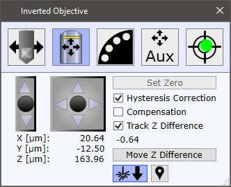

|
倒置物镜定位
|
此对话框可从 附加设备 中访问。

可以使用 UI摇杆控制 或 EasyLink控制器 来控制 X/Y/Z 轴。
设零
为避免倒置物镜与扫描台发生意外接触，最大允许移动区域受到限制。
按设零将所有值设为零并扩大允许移动区域。
滞后校正
如果选中，在使用游戏手柄或"箭头按钮"进行单步移动时将执行滞后校正。
补偿
如果选中，倒置显微镜在探针位置改变时补偿X/Y位置：
跟踪Z差值
如果选中，将跟踪倒置物镜Z位置与显微镜Z步进器位置之间的差值。
移动Z差值
在Z方向移动倒置物镜，以便补偿跟踪的倒置物镜Z位置与显微镜Z步进器位置之间的差值。
表示激光从顶部射入，底部摄像机视图中的标记显示探测器位置。
表示激光从底部射入，底部摄像机视图中的标记显示激光位置。
如果选中，可单击底部摄像机图像以将倒置显微镜移动到所需位置。